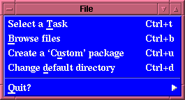
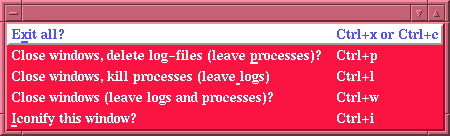
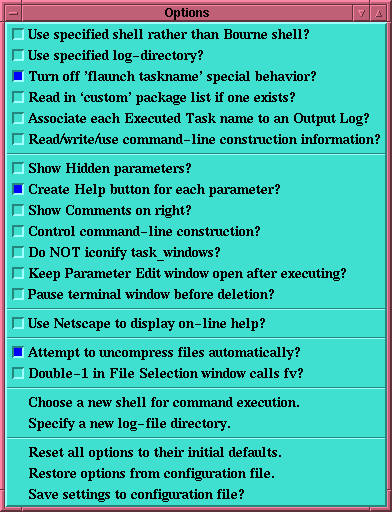
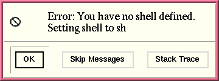
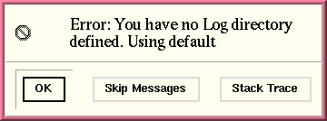
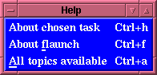

Explanation of the Menu buttons in the Flaunch window
Explanation of the Menu buttons in the Flaunch window
We will take a moment to go over the three menubottons in
detail.
The File menu:
If the user selects the File menu the following will be
displayed:

We see here that there are three options that can be selected,
in which the first two carry out specific operations.
- Select a Task (accessible via the keystroke
Control key and t key pressed simultaneously)
This command will create a
"Task selection" window
which contains an entry box in which the user can type the
task name, e.g. fdump, any standard command, e.g. ls *.log,
or a pattern matching string, e.g. *hist*.
(For more information about this behavior see above.)
- Browse files (also accessible via Control-b)
This option creates a "File
selection" window, which allows the user to select and
view files, using the fits-viewer "fv".
- Create a `Custom' package (also accessible via
Control-u)
This command allows the user to create a custom package,
list which, when the option
Read in `custom'
package list if one exists? is set, will read
in that custom package list. This allows the user to
create a custom package which contains all of the FTOOLS
which are most used allowing greater ease in executing
these tasks. When this event is activated a window appears
which will contain
the selected
tasks (chosen by depressing the
right-most-mouse-button over the taskname that is wished
to be added). This window allows the user to write these
tasks to a file which will be read in each time flaunch is
activated in the future, if the proper "option" is
selected. (For more information on
Creating a Custom package see the
associated
documentation
- Change default directory (also accessible via
Control-d)
This command allows the user to change the default
directory that flaunch is pointed to. When this event is
activated a window appears which will allow the user to
select a directory
and wll then change to that directory and use it as the
default for any farther work that is performed. The user
would have to chose this option again to change the default
directory.
The Quit menu:
The second option
within the File menubutton is to "Quit", which from the arrow
is a menu of its own:

Here we are presented with a number of options as well as a
list of keyboard short-cuts which are bound within the Flaunch
window. We see that depressing the Control key and the "x" key
simultaneously (or depressing the Control key with the "c"
key) will "Exit all", i.e., exiting the entire process,
killing all running processes and deleting all log-files that
were created. This is the global "kill" command. However the
user is also presented with several alternatives to this, the
user can close all windows and delete all log-files but leave
any processes submitted running in the background (Ctrl+p), or all
windows can be closed and all processes terminated but the log
files will be left for observation (Ctrl+l), or the user can simply
close all windows and leave the log files as well as any
processes which were submitted which haven't finished running
in the background (Ctrl+w), or the user can simply iconify the
window (Ctrl+i).
The Options menu:
If you are going to be setting many options, there is a
"tear-off" line at the very top of the menu. If you select
this the menu will appear as a separate window which does
not go away after an option is selected. Thus the user can
select all options and than save the settings to the
configuration file. Note that because this is a separate
X-window feature you will have to "close" this window via a
separate X-window command, i.e., Tcl/Tk cannot close this
window you will have to do that with your windowing system.
If the user selects the Options menu from within the
"flaunch" window the following list
of options will be presented. This shows the user's initial
setup before any modifications are made. The user should
examine the following explainations and tailor flaunch to
behave in a manner most suited to their particular needs. The
initial (default) options display looks like:

These options all relate to the
parameter editing window
which is displayed "if" the task selected has a parameter file
associated with it.
- Use specified shell rather than Bourne shell?
This option tells flaunch to read the file
~/.flaunch/shell_choice. This option works in conjunction
with the command Choose a new shell for command execution.
If this option is set but no corresponding file exists
flaunch will display an error message:

Flaunch will then unset this option and save the current
option configuration to the .flaunchrc file. Under normal
circumstances this should not happen, it is only when
files are removed out from under flaunch that this
problem may occur. If this problem
reoccurs than execute the corresponding command,
Choose a new shell for command execution.
- Use specified log-directory?
This option tells flaunch to read the file
~/.flaunch/log_file. This option works in conjunction
with the command Specify a new log-file directory.
In the unlikely event that this option is set but no
corresponding file exists
flaunch will display an error message:

Flaunch will then unset this option and save the current
option configuration to the .flaunchrc file. Under normal
circumstances this should not happen, it is only when
files are deleted out from under flaunch that this
problem may occur. This error message will only appear
once, as flaunch will unset the option. If this problem
reoccurs than execute the corresponding command,
Specify a new log-file directory.
- Turn off 'flaunch taskname' special
behavior?:
This option controls the behavior of "flaunch" when it is
called with a task specified, e.g., "flaunch saextrct". If
this option is NOT selected than the "flaunch" acts as a
one-shot
calling routine. That is to say that it will
allow the user to edit the task's parameter file, if one
exists, or simply spawn the tool in the window in which
flaunch was called so that all input and output goes to
and comes from that original window. However if this
option is selected than "flaunch" operates in its full
GUI mode allowing the user to run and control multiple
processes from within the "flaunch" window. If the task
specified exists as an FTOOLS task, then a
parameter editing window
will appear, if the "task" is actually a "Perl script"
or and "unknown command" than an
"interactive window" is
spawned in which that command is executed. If the command
is a Perl-script this allows the user to respond to all
prompts, if it is any other command all output from that
command will be displayed in that window, and the log of
all output is available via the
"Output" button in the
"flaunch" window.
- Read in `custom' package list if one
exists?:
This option tells "flaunch" to read in and display a
custom buttton in the PACKAGES list, is the file
$FLAUNCH_CONFIG/custom_tasks exists. [Note: FLAUNCH_CONFIG
is a directory created in the user's $HOME directory which
contains all of configuration files. Normally the default
directory created is ".flaunch" so that under normal
circumstances this file resides in $HOME/.flaunch, however
this may be configurable at some point in the future.
- Associate each Executed Task name to an
Output Log?:
This option tells "flaunch" that rather than having one
Output Log window
to which any selected
executed tasks are to be
displayed, a different window is to be created for EACH
output log selected for display. Note: The name of the
Output Log window will have the name of the selected
executed task selected. This allows the user to compare
the results of multiple runs. This behavior can be toggled
on and off with the use of this option. In general it is
best to leave this option turned off and toggle it on when
necessary - this avoids the proliferation of windows.
Remember a "Ctrl+c" in any window will destroy that window,
so removing windows if easily done.
- Read/write/use command-line construction
information?:
This option tells "flaunch" to read in and use any
information stored in the file "taskname.clf" which is
located in the $HOME/.flaunch directory. This information
can be changed by using the option
Control
command-line construction?: and selecting or
deselecting the command-line usage boxes displayed in the
"Parameter Edit Window"
to the left of the parameter entry box,
the user can control the command-line which is constructed
when the task is called. Note that if this option is
set, the values of the command-line usage boxes are
stored in a file, "taskname.clf",
and will be used whenever that task is called, even if the
user turns off the option to display the control-boxes. If
this option is turned off, the default, than all
parameters are used in constructing the command-line
call.
- Show Hidden parameters?:
Using this option the user can opt to see all
Hidden
parameters (these are the parameters that are usually
hidden from the user and not prompted for).
- Create Help buttons for each parameter?:
This option is set by default and will display a small
"help" button
next to each parameter displayed. If this button is
pressed than the "Extended
Help" window is displayed with the pertinent
section of the help displayed. Thus if the user only
wants to view the help that is pertinent to this
particular parameter, for this particular task than
pressing this button will display it.
- Show Comments on right?:
Using this option the user can control
which side the prompting string appears on - the default is on
the left since this seems to be the most natural place for
the prompting string, however since some users may want
the string on the other side an
option to place
comments on the right was added.
- Control command-line construction?:
Using this option the user can also control the
command-line
which will
be constructed from the parameter file. If this option is
selected then a series of "checkbuttons" appear next to each
parameter, the default is that all parameters will be specified
within the command-line which will be constructed, but sometimes
a truly experience user will want to control this. [The novice
user should leave this option turned off! ]
- Do NOT iconify task_window?:
Using this option the user can control the default
for the "RUN" command, which is to iconify the task_window
created in which the task is executed. Since the user can
examine all output to this window from the
Output Log the executing
task window
generally just clutters up the user's desktop, however as some
people like to "watch" the output scroll by (although they will
not have a scrollbar within the window) this is
configurable. All output generated can be viewed by selecting
the proper log-file from within the
"Executed Tasks"
window
which is activated by depressing the "Output" button which
appears in the main Flaunch window. Once an executed task is
selected the user can view the output log, and even kill the
associated process if they determine that something is not as
they wish. The
Output Log
window allows the user to scroll
back through ALL output and input which was received by the
"terminal task window".
The output log is the preferred method for examining all
output as the user can leisurely examine the results of all
executed tasks.
- Keep Parameter Edit window open after
executing?:
Using this option the user controls if the
Parameter Edit window
remains open during execution. [Note: This option is only
available if flaunch is executed in its "environment" mode.]
- Pause terminal window before deletion?:
Using this option tells Flaunch that it should "pause" the
"terminal task window" (if it is
opened and displaying output to the screen) before
deleting it after the executed task is complete. The pause
will only last for 10 seconds, to allow the user to see the
status of execution, i.e., to see if the task exited
cleanly. For more information the user is reminded that all
output generated and
displayed to the "Terminal task window" can be
viewed by selecting the proper log-file from within the
"Executed Tasks"
window
which is activated by depressing the "Output" button which
appears in the main Flaunch window. Once an executed task is
selected the user can view the output log, and even kill the
associated process if they determine that something is not as
they wish. The
Output Log
window allows the user to scroll
back through ALL output and input which was received by the
"terminal task window".
The output log is the preferred method for examining all
output as the user can leisurely examine the results of all
executed tasks.
- Use Netscape to display on-line help?:
Using this option the user can control which HTML
browser to use to examine the on-line Help for Flaunch. The
default is to use the Itcl's built in "Hyper-help"
utility. Unfortunately, this browser has several serious
flaws which can affect some of the links which are
present. (The most serious of which is the inability to
follow tags within HTML files.) However, Netscape can also
be used to browse the on-line help. Netscape fully supports
all of the HTML features that are present.
When Netscape is first spawned within Flaunch, it simply
executes Netscape upon the selected HTML file - allowing
Netscape to determine if other Netscape processes are
executing and displaying the appropriate warning. However,
each subsequent call will determine if Netscape is still
executing and if so, it will use that window for
subsequent HTML help displays.
- Attempt to uncompress files automatically?
This option allows the user to specify that all file related
windows should attempt to uncompress any selected files
automatically. Otherwise the files will be returned as is -
and left to the associated tool to handle. Note: This will
usually result in an ERROR and the tool will abort, since no
standard Ftool checks for compression. So it is suggested
that the user leave this option set. At present the two
windows that will automatically uncompresses selected files
before returning them to the calling routine are the
"File selection" and
"List of Selected
Items" windows. The initial setting is to attempt to
uncompress all compressed files. Note that this utility uses
"gzip" to perform all uncompress operations - thus the user
must have "gzip" in their path. Files that end in .gz, .z, or
.Z are all allowed, at present gzipped tar-files, and
tar-files in general are NOT supported at this time.
- Double-1 in File Selection window calls fv?
This option allows the user to specify that when the
"File selection" window is
displayed, if the user clicks the left-most-mouse-button
(Button-1) twice then "fv" is activated rather than having the
filename returned - which is the default binding for
Button-1.
- Chose a new shell for command execution.
This causes the
Choose a Shell window
to be displayed. The user can select a new shell that is
used to execute commands entered into the
Task Selection window
which are not FTOOLS tasks. Thus if a user commonly uses the
C-shell and has customized commands in his .cshrc file, he
can choose to use the C-shell for executing any commands
entered into the "Task Selection" window. The results of
these commands will be written to the appropriate
log-file. The result of this command is stored in a file
$HOME/.flaunch/shell_choice, if this file is removed "sh" is
used for all command executions.
- Specify a new log-file directory.
This command causes the
Directory Selection window
to be displayed. The user can chose any directory and
have all Log files written to that directory. The
default is to write them to the users's $HOME/.flaunch
directory, but this is over-ridden by using this
option. This information is stored in the file
$HOME/.flaunch/log_file which is used if it exists. Once
this option is set, it can only be changed to another
directory by selecting this option again.
- Reset all options to their initial defaults.
Note that this does NOT change the previously defined
shell, or log-file directories. However, it does restore
all displayed "Options" to their default values. To save
this the user must explicitly do so by selecting the
"save" option.
- Restore options from configuration file.
This option read the setting from the configuration file
which was previously saved - allowing the user to
recover from having reinitialized the options to their
default settings.
- Save settings to configuration file?
The final option is not really an "Option" but an action,
with the use of this the user can "Save" these setting to an
initialization file (.flaunchrc) which Flaunch will
use to configure itself to the user's personal preferences.
The Help menu:
If the user selects the Help menu the following list
of options will be presented:

- About chosen
task:
If the user has selected a task, and opts to receive help about
that task using this option, an
Extended Help
window will appear in which the result of an "fhelp taskname" is
performed. [Notice the keyboard bindings that are available in
the "flaunch" window, i.e., Ctrl+h will cause the
Extended Help window to be
displayed, Ctrl+f will cause the "Help" for Flaunch to be
displayed, and Ctrl+o will cause a
Topic list to appear.]
- About flaunch:
If the user selects this option then a browser is called,
this can be either the default Itkwish hyperhelp browser, or
Netscape depending on if the user has selected to use
Netscape to display the on-line help, in the
Options menu. This help describes and
explains the usages of flaunch, as well as all of its present
abilities. [This us bound to the keyboard option Ctrl+f.]
- All topics
available:
This option displays a list of all on-line help information
pertaining to flaunch. This is simply a list of all
hyper-links available. [Notice that typing Ctrl+a
will also cause this window to appear.]
INDEX
Brian K. Elza
Last modified: Thu Aug 14 14:59:59 EDT